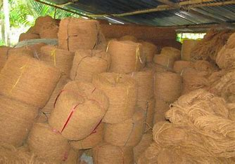
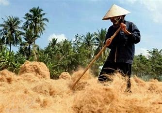
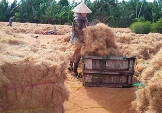
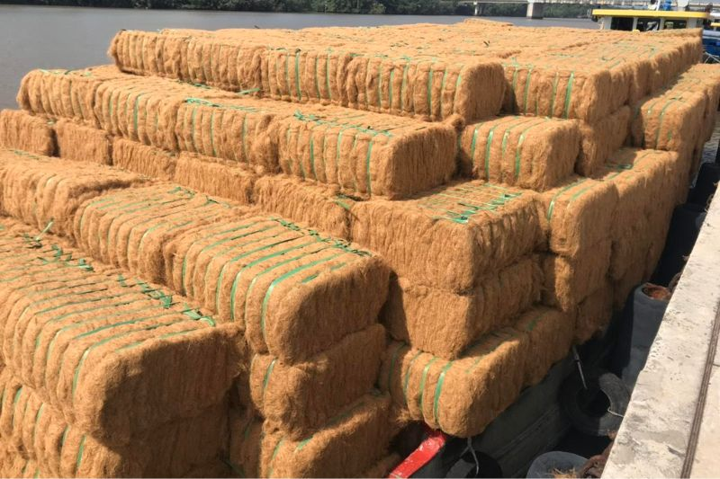
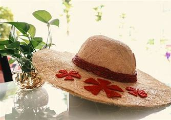

Làng nghề chỉ xơ dừa An Thạnh Bến Tre là một trong những nơi lưu truyền và phát triển công việc truyền thống mang lại giá trị bền bỉ qua năm tháng. Đây sẽ là điểm du lịch Bến Tre mà bạn nhất định không thể bỏ qua trong hành trình khám phá và hòa mình vào đời sống sinh hoạt của người dân xứ dừa.
Giữa nhiều địa điểm tham quan nổi tiếng như Vườn trái cây Hoàng Tuấn, Cồn Đất An Hiệp... Làng nghề chỉ xơ dừa An Thạnh Bến Tre gây ấn tượng bởi nét đẹp văn hóa - truyền thống vô cùng đặc sắc. Không chỉ gắn bó mật thiết với đời sống của người dân Bến Tre, công việc này còn cho thấy được sự sáng tạo của ông cha ta trong quá trình tận dụng những sản vật thiên nhiên sẵn có. Dừng chân nơi đây khám phá và tự mình trải nghiệm, bạn chắc chắn sẽ trầm trồ, thích thú trước ngành nghề thú vị này.
Kề bên dòng sông Thom hiền hòa, Làng nghề chỉ xơ dừa An Thạnh Bến Tre có vị trí cách trung tâm thành phố khoảng 26km, mất chừng 30 phút di chuyển. Nhờ vào sự phát triển của ngành du lịch, bạn có thể đến đây bằng nhiều loại hình phương tiện khác nhau từ bus, Taxi Bến Tre đến xe máy, ô tô... Những năm trở lại đây, bởi vì ngôi làng đã dần hoạt động dưới hình thức chợ phiên, do đó nếu muốn tham quan, bạn chỉ cần tìm trên Google Maps Chợ Dừa sông Thom - Mỏ Cày rồi chạy theo cung đường được hướng dẫn là sẽ đến được điểm du lịch.
Làng nghề truyền thống Bến Tre này bởi vì nằm dọc theo dòng sông Thom tấp nập tàu ghe qua lại nên lâu dần cũng hoạt động dưới hình thức chợ nổi trên sông. Tập trung chủ yếu ở ấp Vĩnh Khánh, làng làm chỉ xơ dừa ra đời từ những năm 1980. Vào thời điểm này, nơi đây chỉ có 2 xưởng sản xuất chính. Trải qua nhiều năm dài, hiện ngôi làng đã có 43 cơ sở, 6 công ty cùng 1 doanh nghiệp chuyên sản xuất và ép kiện, mụn chỉ xơ dừa. Làng nghề chỉ xơ dừa An Thạnh Bến tre cũng tạo điều kiện làm việc cho hơn 1000 lao động trong xã và vùng lân cận.
Từ quy trình công phu gồm các bước như thu mua dừa, tách vỏ và phơi chỉ, người dân địa phương đã làm ra vô số dòng sản phẩm thủ công đẹp mắt. Trong số đó, thảm, mũ và túi xơ dừa là các thành phẩm được nhiều người yêu thích nhất. Không chỉ cung cấp cho thị trường trong nước, các dòng sản phẩm mỹ nghệ này còn được xuất ra nước ngoài. Có thể nói, chính những món đồ thủ công này đã mang Bến Tre nói chung và Làng nghề chỉ xơ dừa An Thạnh nói riêng đến gần hơn với các tỉnh thành cũng như quốc gia lân cận
